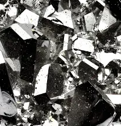
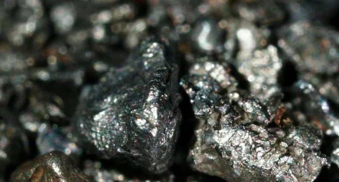
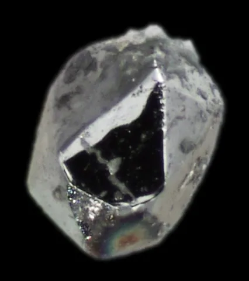
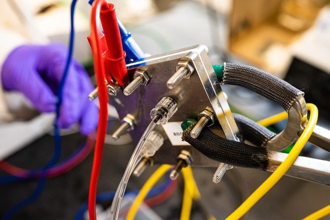
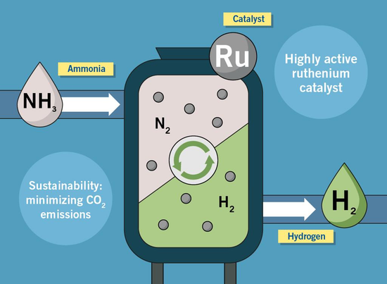
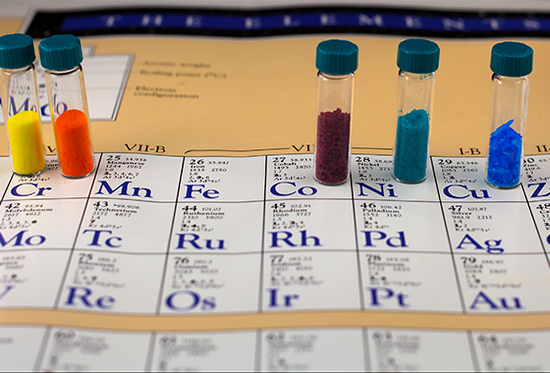
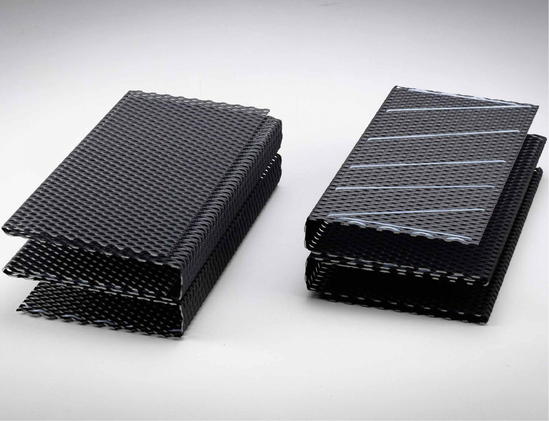
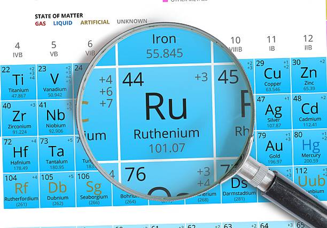

Fonte da Imagem: https://brasilescola.uol.com.br/quimica/rutenio-ru.htm, acesso em 27 ago de 2026.
O Rutênio é um elemento químico de número atômico 44 que faz parte dos Metais de Transição, sendo um dos metais do grupo da platina (MGP).
Em temperatura ambiente podemos encontrar o Rutênio em estado sólido. Sua aparência é metálica e brilhante de coloração branca ou cinza prateada.

Fonte da Imagem: https://www.tablaperiodica.org/rutenio/, acesso em 17 jun de 2020.
Apesar dos químicos Jöns Berzelius e Gottfried Osann quase terem descoberto o Rutênio, foi o químico alemão Karl Karlovitch Klaus que descobriu oficialmente em 1844.
Klaus investiu em uma análise sistemática de resíduos insolúveis deixados após a dissolução da platina bruta em água régia. Assim, isolando 6 gramas de um novo metal que nomeou de “Rutênio”, em homenagem ao nome medieval da Rússia.
Fonte da Imagem: https://tatarica.org/tat/razdely/nauka/personalii/klaus-karl-karlovich, acesso em 2026.
É um elemento raro encontrado na natureza em poucos minerais, como a laurita (RuS₂). Também pode ser encontrado junto a outros elementos do grupo da platina, formando ligas metálicas.
Comercialmente é obtido de forma mais comum por meio de rejeitos de níquel, oriundos de seu refino advindo do minério pentlandita, (Fe,Ni)S. Destacam-se os depósitos da África do Sul, Rússia, Zimbábue, Estados Unidos e Canadá.

Fonte da Imagem: https://www.le-comptoir-geologique.com/laurite-encyclopedia.html, acesso em 2026.
| Característica | Informações |
|---|---|
| Símbolo | Ru |
| Eletronegatividade | 2,2 |
| Ponto de Fusão | 2334 °C |
| Ponto de Ebulição | 4150 °C |
| Densidade | Aproximadamente 12,45 g/cm³ |
| Reatividade | Baixa em condições normais, sendo resistente à corrosão e à oxidação. |
| Oxidação | +2, +3, +4, +6 e +8 |
Uma das principais utilidades do Rutênio é no endurecimento do paládio e da platina. As ligas metálicas são empregadas em contatos elétricos de alta resistência ao desgaste.

Fonte da Imagem: https://ar.inspiredpencil.com/pictures-2023/ruthenium-electrical-contacts, acesso em 2026.
Pode ser usado como catalisador na produção de amônia e ácido acético, aumentando a velocidade e a eficiência das reações químicas.

Fonte da Imagem: https://www.heraeus.com/en/news-and-stories/green-hydrogen/, acesso em 2026.
Pesquisadores da USP descobriram que compostos à base de rutênio podem ser promissores no tratamento da doença de Chagas. Os “acetatos de rutênio” apresentaram, em testes in vitro, maior eficácia que o Benzonidazol, medicamento de referência no Brasil, abrindo possibilidades para o desenvolvimento de novos tratamentos.

Fonte da Imagem: https://www.labnetwork.com.br/noticias/farmacos-a-base-de-rutenio-tem-alto-potencial-contra-doenca-de-chagas/, acesso em 15 ago de 2019.
Revestimento de ânodos e células eletroquímicas, contribuindo para sua resistência e eficiência durante as reações

Fonte da Imagem: https://www.titan-innovation.com/product/ruo2/, acesso em 2026
Rutênio não é considerado um elemento essencial para o organismo humano, mas alguns de seus compostos apresentam potencial na medicina, principalmente em pesquisas para o tratamento de câncer e doença de Chagas.
Possui um mercado pequeno, mas importante para as indústrias eletrônica, química e de catalisadores. A maior parte é produzida na África do Sul e obtida como subproduto da mineração de platina e níquel. Seu uso em resistores, contatos elétricos e catalisadores, além da alta taxa de reciclagem, mantém sua importância econômica.
Geralmente, não é prejudicial à natureza e apresenta alta capacidade de reciclagem, devido à possibilidade de reaproveitamento do metal. Porém, sua extração excessiva e o descarte inadequado podem causar impactos ambientais, como a contaminação do solo e da água.
Não apresenta alta toxicidade, mas alguns de seus compostos podem ser tóxicos e irritantes caso haja exposição em altas quantidades.
A inalação ou contato prolongado pode afetar principalmente a pele, os olhos e o sistema respiratório. Por isso, é importante utilizar equipamentos de proteção durante seu manuseio.
É importante usar luvas, óculos de proteção e máscara, além de trabalhar em um local bem ventilado.

Fonte da Imagem: https://www.istockphoto.com/br/fotos/ruthenium-element-periodic-table, acesso em 2026